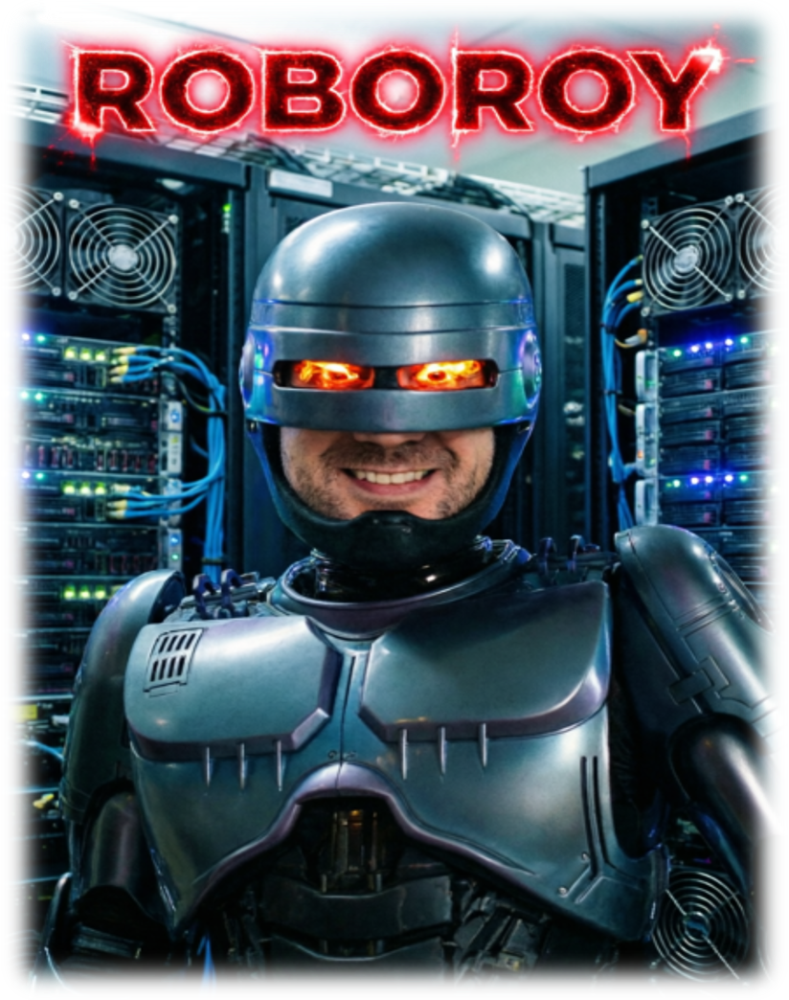

“Double the Roy, double the fun.”
Roy could nag you every week. Roy has better things to do.
seff afterward.
Reads a week of SLURM accounting — real or mock — computes per-user efficiency, energy & CO₂, then a local LLM writes the reports and a stand-up monologue, read aloud in a dry British voice.
A week of SLURM jobs: walltime, CPU, GPU, mem.→
Per-user overprovisioning, kWh, kg CO₂.→
Auto-routes to the smallest GPU that fits. Offline.→
Markdown + Piper / say audio.
“Many geoharm-agent-gpu tasks were overprovisioned on time. Next time use --time=00:30:00.”
“A staggering achievement in doing nothing.”
“Requesting 12h walltime only to finish in 0% is a staggering achievement in doing nothing. Try checking if the job has actually started.”
8h GPU job, used 2% → --time=08:00:00 --time=00:30:00
Actionable. Local. And it makes the lab laugh once.